要るもの：OBS 1つ
2019/01 現在は OBS-Studio-22.0.2-Full-Installer-x64.exe を普通にインストールすればおｋ
初回起動時は自動構成ウィザードを使う方が無難
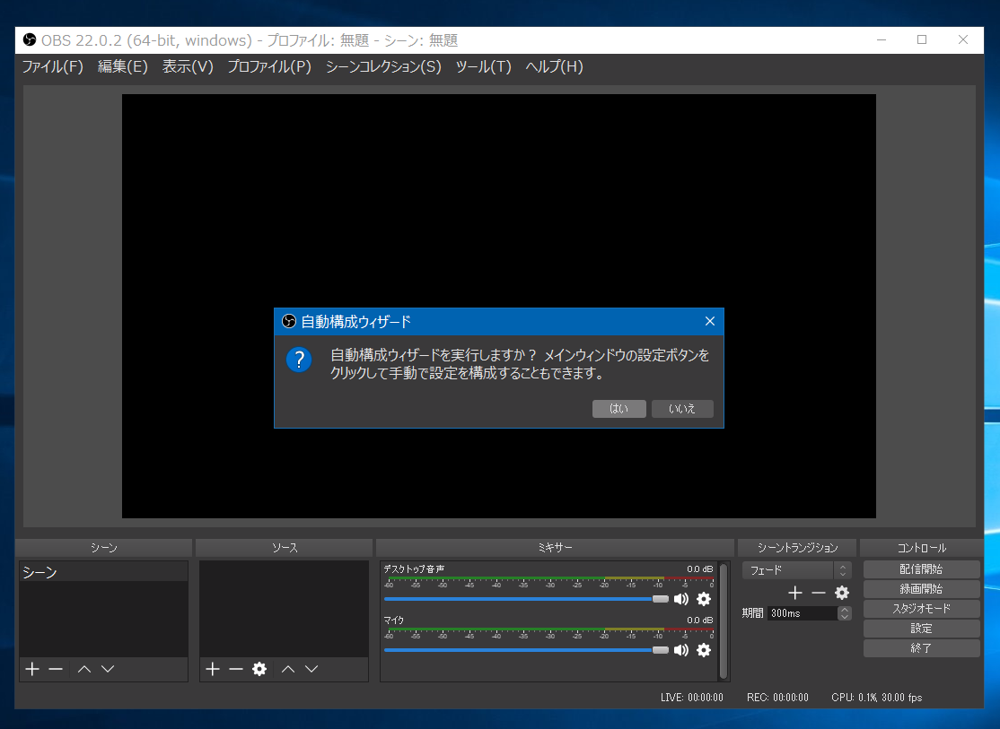
録画の為に最適化し配信はしない を選択
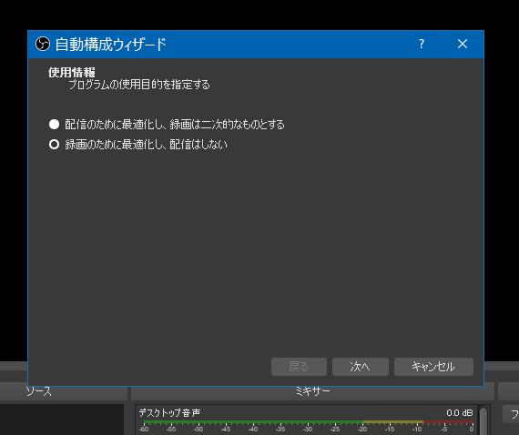
映像設定は キャンバス：現在の値、FPS：可能なら60を優先 次へ
性能測定が始まるのでしばし待つ、オワたら設定を適用したらおｋ
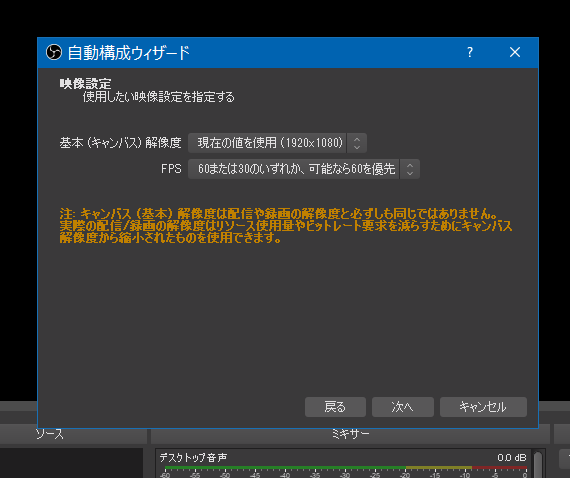
OBSのメイン画面に戻ってきたらファイル→設定で細かい設定をする
出力の欄を開いたら、出力モードを詳細 にして録画のタブを開く
録画ファイルのパスをCドライブ以外にするのが望ましい (USB3.0 HDD等)
エンコーダの所を GeForce にやらせるなら NVENC H.264
または Core i3/i5/i7 にやらせるなら QuickSyncVideo H.264 (ノートならこれで)
ターゲット quality
プロファイル baseline
レート制御 VBR
ビットレート 6000 / 最大ビットレート10000 くらい
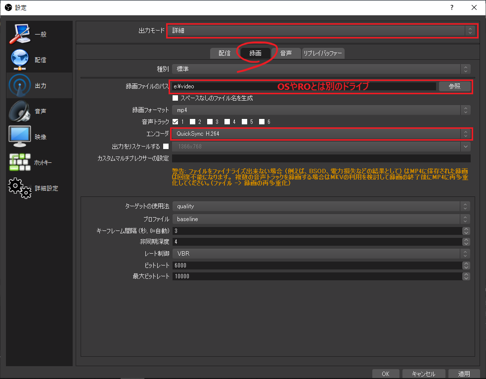
エンコーダの項目に QuickSync や NVENC が見当たらない場合や、ソフトウェアエンコードする場合は
出力モードを基本、録画品質を超高品質、録画フォーマットをmp4にしておく
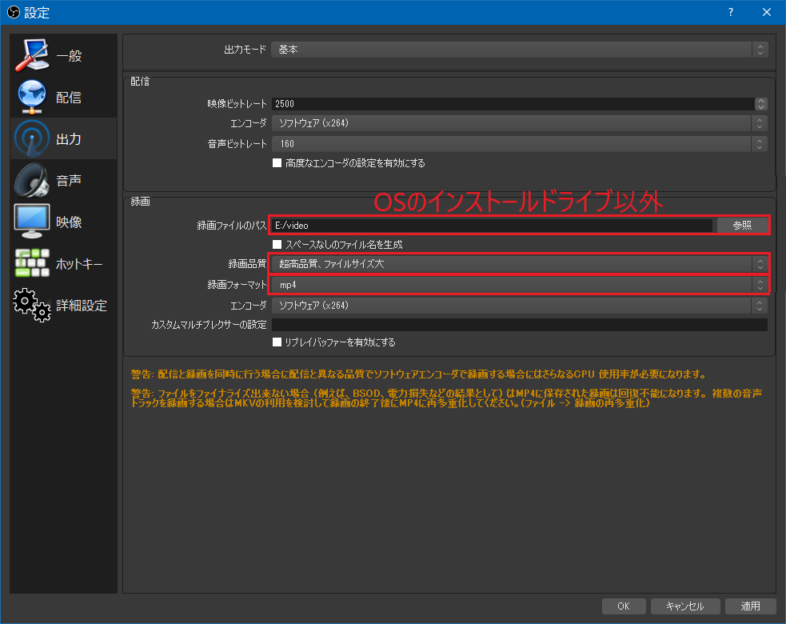
出力モードを詳細設定する場合(クリックで展開)
出力のタブで出力モードを詳細にして、録画のタブを開く
録画ファイルのパスをCドライブ以外が望ましい(USB3.0 HDD等)
録画フォーマット mp4、エンコーダ x264
ビットレート 6000～10000 (録る解像度による)
プリセット fast～slower (PCのスペックによる fastのが軽い)
プロファイル high
x264オプションに bframes=0 を入力しておく
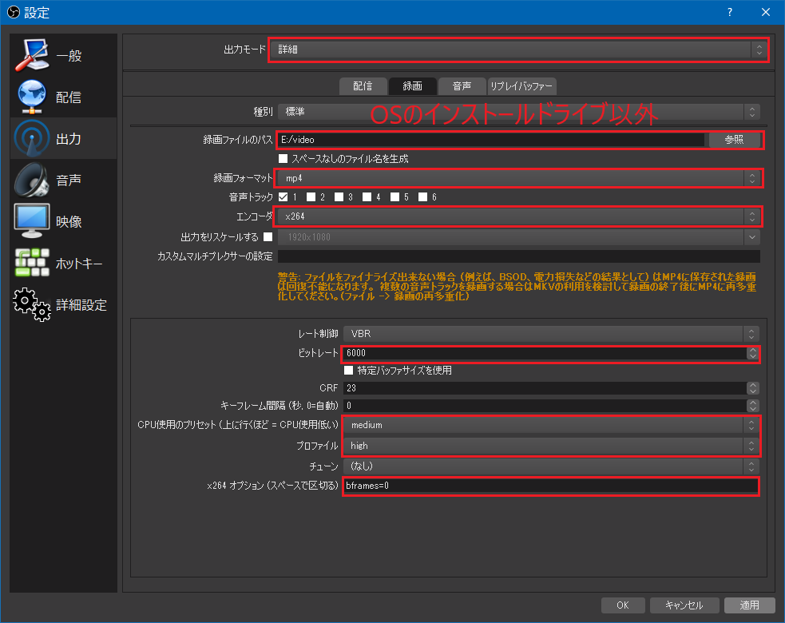
音声のタブでサンプリングレート 48KHz、デスクトップ音声デバイス以外を Disable(無効) に
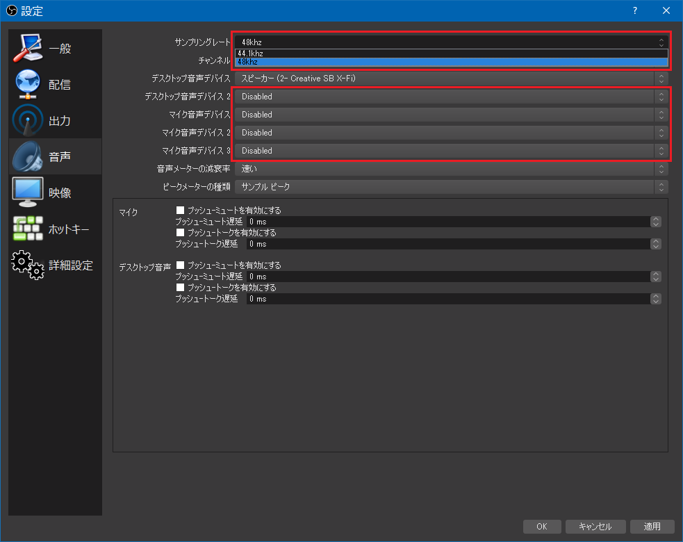
映像のタブで基本解像度と出力解像度をROの解像度と同じサイズにする
1024x768 とか書けばおｋ xは小文字のエックスな
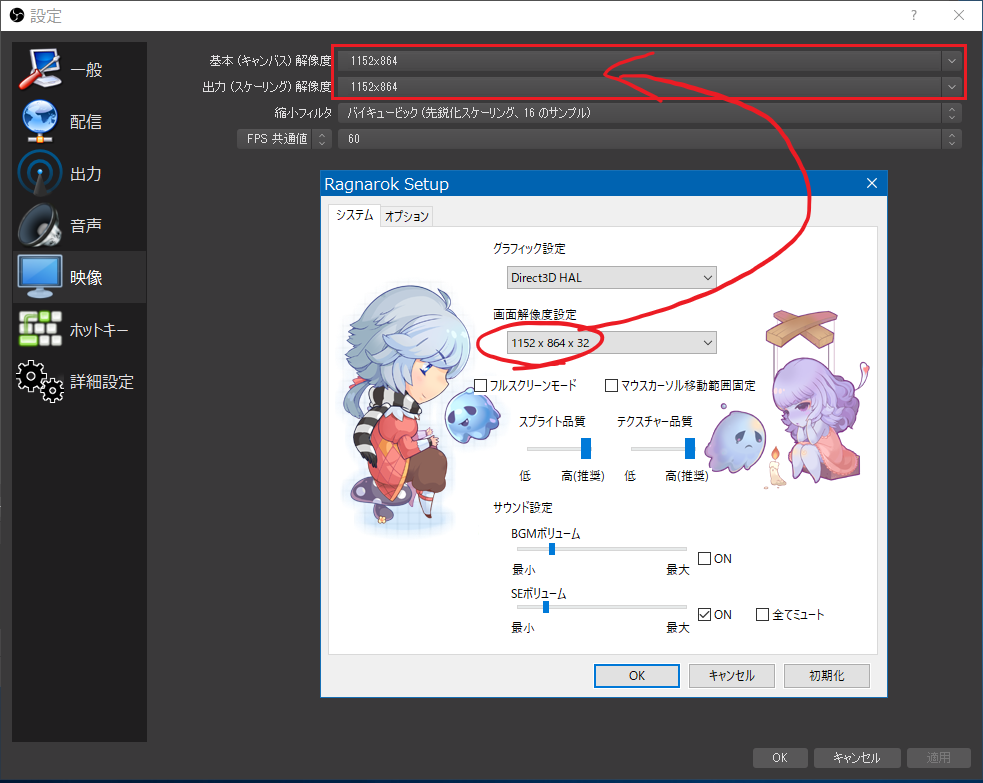
詳細設定のタブでカラーフォーマット NV12、YUV色空間 601、色範囲 全部 にする
きっと自動で減色してくれるはず・・・ 自動で音量を下げる機能を無効 にチェックを入れる
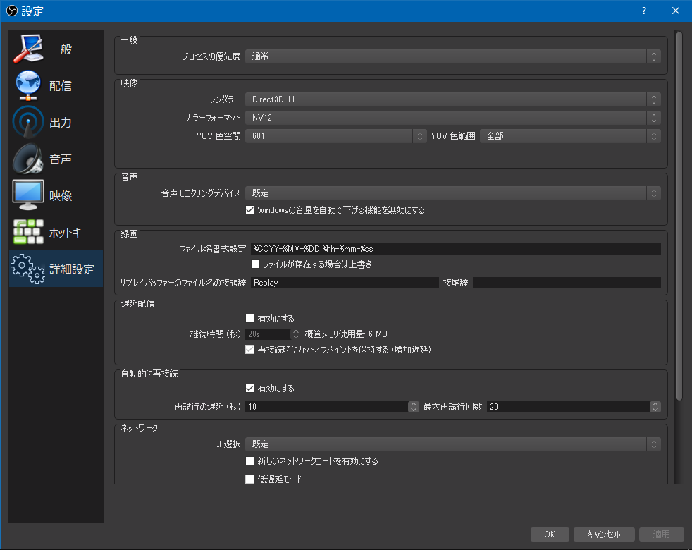
OBSのメインウィンドウで左下のソースにある＋をクリックして
ウィンドウキャプチャを選択する
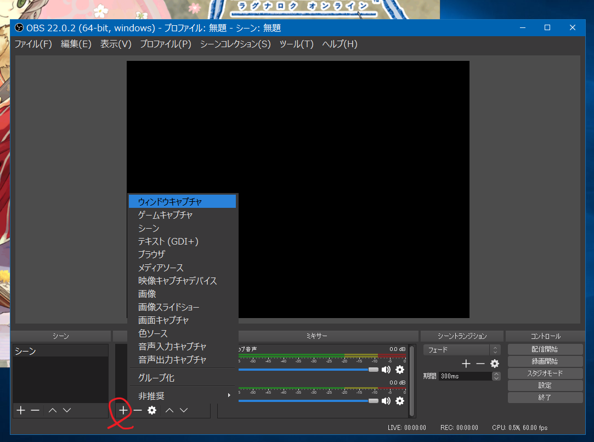
なんか適当な名前を付ける
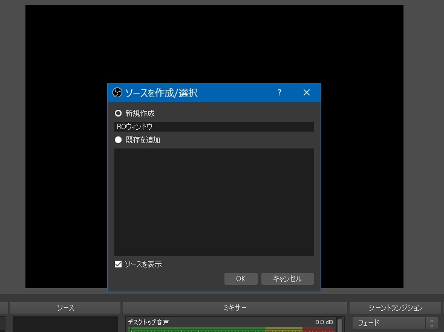
ウィンドウ から Ragexe.exe を選択する
カーソルをキャプチャ のチェックを入れる

OBS本体を横なり下なり適当にはみ出して置いて、タスクトレイの巴紋みたいなアイコンを
右クリックして 録画/停止 を選べばおｋ
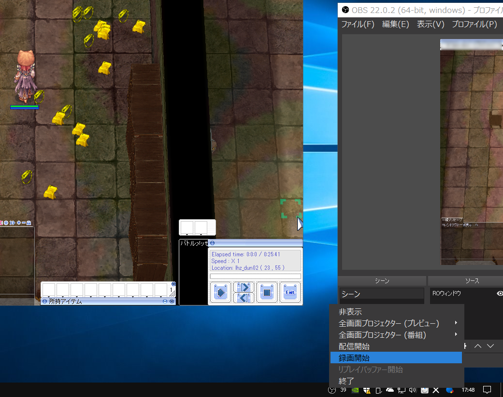
画質は ソフトエンコ > GeForce(NVENC) > Intel Core i3/i5/i7(QuickSync)
NVENCとQuickSync は HWエンコードなので、動画を録る負荷がほぼ無いのでノート向け
/bgm でBGM切っといた方が後で楽
RO内でrecも同時にやっとくと撮り直しも楽だが、2回見るのめんどいから直で録っちゃってもおｋ
直で録る場合、カーソルは自キャラやPCを避けて動かすと後で楽 (PT欄からスキルを使用したり)
基本的にPCで鳴る音、エラー音とかブラウザの音とかdiscordの通知とかの音も入るので
閉じるなり取り込み中にしてどうぞ
エンコード編にジャンプ